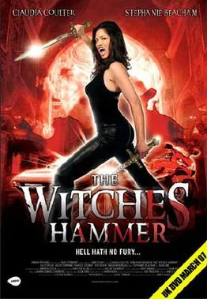

The genetics
Genetic modification creates the heroine. A covert organization, Project 571, turns Rebecca into a genetically modified vampire and coerces her into becoming its assassin by holding out the hope that she might see her family again. The film never explains how the modification works or why the project makes engineered vampires, and after the opening the story turns into a quest for a book of spells in which magic, not science, defeats the villain. The scientists or agents of Project 571 appear only briefly and are presented as a cold, coercive organization before they are massacred. Genetics here is a modern explanation for a vampire in an otherwise supernatural story; no real genetic change could produce a vampire.
How genetics is portrayed
- Overall portrayal of genetics
- negative Genetic modification is the tool of a covert organisation that turns a kidnapped woman into an assassin through coercion, and the villain is finally defeated by magic, not science.
- Outcome of the genetic intervention
- mixed Rebecca is altered against her will and cut off from her husband and son, but the abilities she gains let her, the heroine, carry out the quest that ends with Hugo Renoir's destruction.
- Project 571
- villain Aim: military (negative). The covert organisation turns the kidnapped Rebecca into a genetically modified vampire without her consent, keeps her from her family and coerces her into becoming its assassin; the film presents it as cold and manipulative, and its members are slaughtered early on.
The story
Rebecca is attacked in the street and wakes up in the hands of Project 571, a covert organization whose agents tell her that she cannot return to her husband and son because they have altered her into a genetically modified vampire. Promised that she might see her family again if she cooperates, she trains to become a skilled assassin. Returning from a mission, she finds everyone at Project 571 slaughtered and is rescued by the warlock Edward, who takes her to the witch Madeline, head of the rival Project 572. Madeline needs her to recover The Witches Hammer, a book of spells written by the Russian witch Katanya, because only one of its spells can kill Hugo Renoir, a vampire who has made himself invulnerable. Rebecca and Edward set out after the book, fighting rival vampires and Hugo's minions who also want it, and Hugo is finally destroyed with a spell from the book.